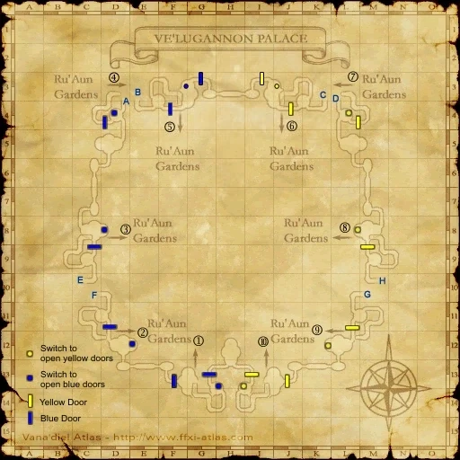

Level 75 reference · Zenith rules
|
Job: Notorious Monster |
|
|
Zone |
Level |
Drops |
Steal |
Spawns |
Notes | ||||||
|
1 |
| ||||||||||
|
HP = Detects Low HP; M = Detects Magic; Sc = Follows by Scent; T(S) = True-sight; T(H) = True-hearing JA = Detects job abilities; WS = Detects weaponskills; Z(D) = Asleep in Daytime; Z(N) = Asleep at Nighttime | |||||||||||



Image source
Notes:
- Spawned by trading a Curtana to the ??? found at (H-12).
- The ??? respawns every 15 mins Verification Needed
- His attacks have an Additional Effect: Terror
- Because of this, it is recommended that a Ninja tanks.
- He can only be killed with the Buccaneer's Knife that is stolen from him. He will have 1 HP until he is hit with the Buccaneer's Knife.
- Killable by 5 level 75 players
Adapted from Eden Wiki: Brigandish Blade · Contributors and history · CC BY-SA 4.0. Revision 1990. Layout, links and optional background text adapted for Zenith.